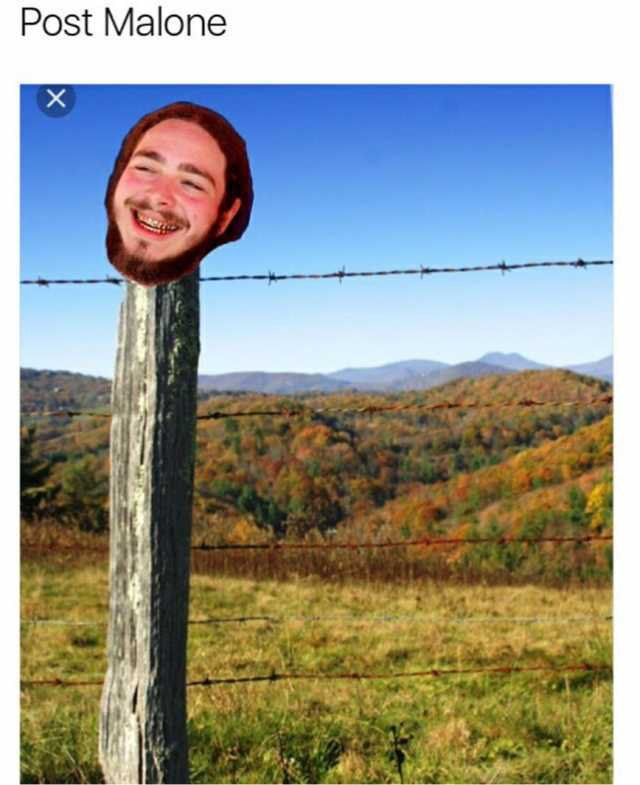
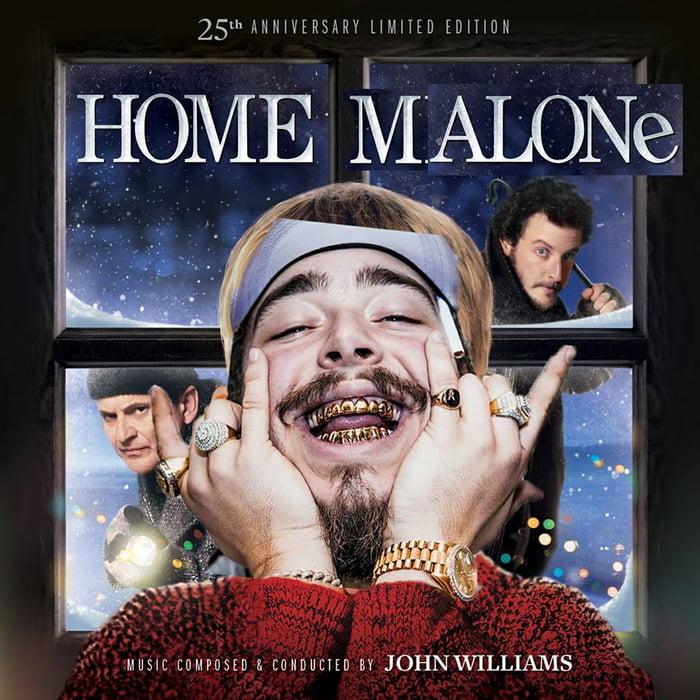
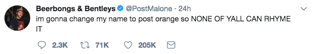

Born Austin Richard Post on the Forth of July in 1995, Post malone is an American rapper, singer, songwriter, and record producer.
Post is known for blending musical genres, described once by a New York Times author as "an artist who toes the line between singing and rapping, and hip-hop and spooky electric folk".
Apart from his music, Post Malone is known widely for his sense of humor about himself and what he does. The video below puts this quality on full display as he goes through the comments on one of his music videos.
As a result of his lighthearted nature and his unique, eccentric appearance, Post Malone has also become a meme in his own right.
  